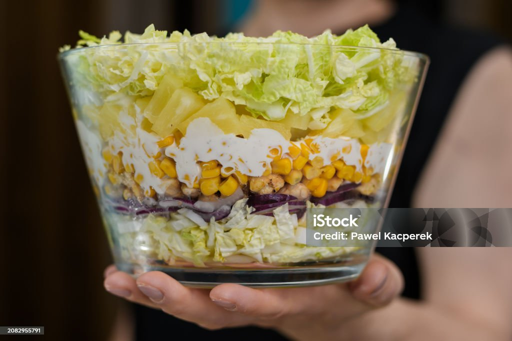

Hawaiian Chicken Salad

Hawaii Chicken Salad is a bright and refreshing mix of tender, seasoned chicken tossed with sweet pineapple chunks,
crisp lettuce, and crunchy vegetables. It’s often paired with a creamy tropical dressing—sometimes with hints of coconut,
lime, or honey—which adds a smooth, island-inspired flavor. Light, juicy,
and slightly sweet, this salad brings a taste of Hawaiian sunshine to every bite.
Ingredients
- 2 (3 ounce) packages cream cheese, softened
- ½ tablespoon olive oil
- ⅓ cup creamy salad dressing, e.g. Miracle Whip
- 1 (8 ounce) can pineapple tidbits, juice reserved
- 3 (5 ounce) cans chunk chicken, drained
- 1 cup blanched slivered almonds
- cayenne pepper to taste
- 1 ½ cups seedless grapes, halved
Instructions
- Beat cream cheese in a medium bowl until fluffy.
- Mix in salad dressing and 2 tablespoons reserved pineapple juice.
- Stir in pineapple tidbits, chicken, almonds, and grapes until evenly coated.
- Chill in the refrigerator until serving.
Home